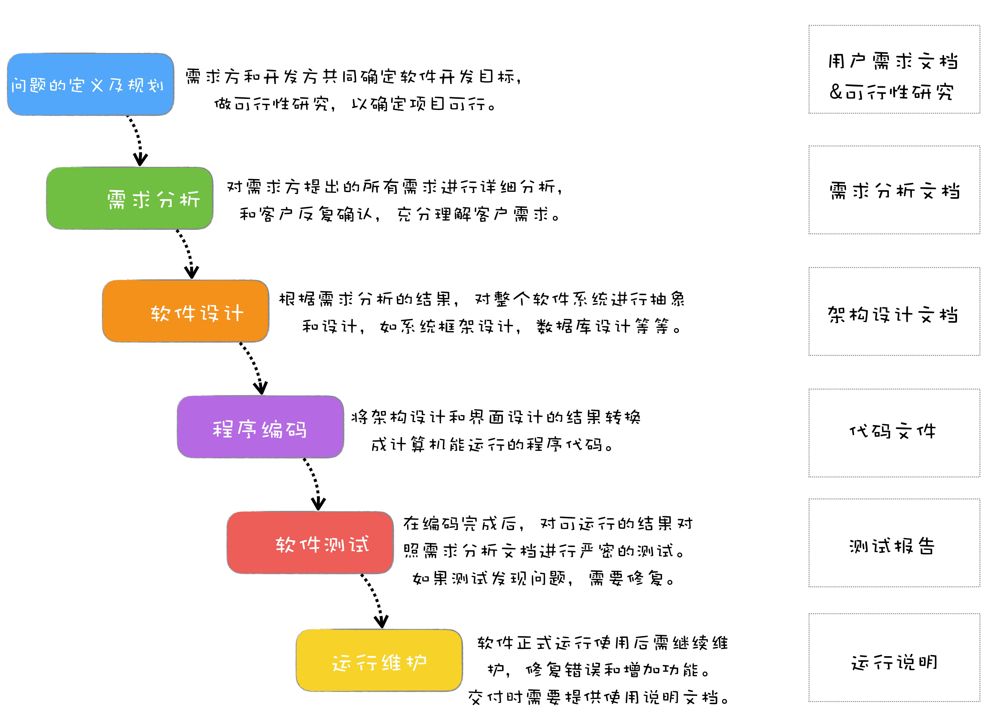

前言
软件工程（software engineering）的本质：用工程化的方法去规范软件开发，让项目可以按时完成、成本可控、质量有保障。
而瀑布模型则算是现代工程软件的起源，软件工程的发展，很多都是构建于瀑布模型基础之上的。
瀑布模型的诞生
为了解决软件危机中的这些问题，在 1970 年，Winston Royce 博士借鉴了其他工程领域的思想，比如建筑工程，提出了瀑布开发模型，指出软件开发应有完整之周期，并将软件开发过程分成了若干阶段。像瀑布一样，从上往下，完成一个阶段继续下一个阶段。

瀑布模型把整个项目过程分成了六个主要阶段：
一、问题的定义及规划
这个阶段是需求方和开发方共同确定软件开发目标，同时还要做可行性研究，以确定项目可行。这个阶段会产生需求文档和可行性研究报告。
二、需求分析
对需求方提出的所有需求，进行详细的分析。这个阶段需要和客户反复确认，以保证能充分理解客户需求。最终形成需求分析文档。
三、软件设计
根据需求分析的结果，对整个软件系统进行抽象和设计，如系统框架设计，数据库设计等等。最终行程架构设计文档。
四、程序编码
将架构设计和界面设计的结果转换成计算机能运行的程序代码。
五、软件测试
在编码完成后，对可运行的结果对照需求分析文档进行严密的测试。如果测试发现问题，需要进行修复。最终测试完成后，形成测试报告。
六、运行维护
在软件开发完成，正式运行上线后，需要继续维护，修复错误和增加功能，交付时要提供说明文档。
瀑布模型在提出后，因为其简单可行，切实有效，马上就在很多软件项目中应用起来，一直到 2000 年前后，都是最主流的软件开发模型，即使到现在，你也能在很多软件项目中看到它的影子。
也是从那时开始，有了“软件生命周期”(Software Life Cycle,SLC) 的概念。
瀑布模型进行开发项目
虽然现在瀑布模型已经不是最主流的开发模式。
但是不管什么软件项目，不管采用什么开发模式，有四种活动是必不可少的，那就是需求、设计、编码和测试。而这四项活动，都是起源自瀑布模型，也是瀑布模型中核心的部分。
这里使用案例来直观理解一下用瀑布模型进行开发整个软件的过程。
问题的定义及项目规划阶段
公司老板打算做一个游戏领域的社交网站，问题很明确，就是一个社交网站，并且用户能按照游戏来交友。至于可行性分析，总多社交是已经很火的事情了，似乎是可行的。那么就立项了。
然后老板就问项目经理，这样的一个网站，大概需要多久做得出来？项目经理回答，如此复杂的网站大概需要半年出来一个版本，老板说半年太久了，给你三个月吧，最后讨价还价，决定四个月上线。
于是项目经理按照四个月开始了倒推项目计划：
需求分析——2周
软件设计——4周
程序编码——6周
软件测试——4周
需求分析的阶段
在项目立项后，产品经理首先和老板充分的沟通，了解老板的想法是什么，要做一个什么样的网站。在了解老板的想法后，产品经理对市场上同类的社交网站进行了调研，然后用原型工具设计了网站的原型。原型虽然很简陋，但是从原型可以看出来，项目要做成什么样子，便于确认需求。
原型拿给老板看后，老板再根据自己的想法提一些反馈，这样反复沟通确认，在原型设计确认清楚后，产品经理开始撰写产品设计文档，将原型设计落实到文档，将整个网站划分成不同的功能模块，例如用户注册、登录、添加好友等，确定每个功能模块需要哪些功能。
这个阶段产品经理是最忙的，那这时候其他人在干嘛呢？其他人都还挺轻松的，架构师研究网上流行的社交网站都采用什么架构，程序员、测试看看技术文档。
虽然最终确定了产品设计文档，但是因为中间反复确认的时间过长，原定 2 周能完成的需求分析，最后拖到了 3 周。项目经理一看，最终上线时间点没法延，那就只好压缩编码时间了，不行加加班！
项目计划变成了：
需求分析——3周
软件设计——4周
程序编码——5周
软件测试——4周
软件设计
产品经理的产品设计文档确定后，架构师开始做架构设计，UI 设计师开始设计 UI，测试经理开始针对产品设计文档写测试用例，产品经理还要进一步设计交互。
由于前期原型设计工作做的好，所以 UI 设计还是很顺利的，主风格定下来以后，各个界面就是细节的确认了。
因为产品设计文档写的详细，输入输出很清楚，测试用例也进展顺利。
至于架构设计这边，架构师很有经验，先把整体架构确定，写了个技术方案文档，和大家一起开会讨论，几次后确认了整体技术方案。按照功能模块一拆分，把其中一个功能模块做了一个样板，然后把各个子模块分给开发人员，大家一起协助做详细设计，然后再分别确认。
大家都如火如荼地忙起来了。如果一切顺利的话，软件设计 4 周应该能完成，可以进入编码阶段了。但是软件设计进行到第 3 周的时候，老板的想法发生了一些变化。
因为市场上已经有了游戏社交的网站，而且运营结果不算太好，而网页游戏正流行，如果我们的平台能接入网页游戏，这会是个不错的机会。
于是需求变更了，我们要能和其他网页游戏的用户系统对接，这个需求最开始是没有提出来，也没有考虑的。
项目经理考虑再三，决定还是接受这个需求变更，但是希望能多一些时间，老板没同意，认为时间点很重要，哪怕砍一点功能，牺牲一点质量也要如期上线。但就算这时候砍功能，设计工作还是少不了多少。
于是产品经理重新修改相应原型，再确认，再重新修改产品设计文档。变更完后，UI 设计的相关页面重新修改设计、测试人员修改测试用例，最苦的是架构师，当初没有考虑到要和其他用户系统对接，现在用户系统的设计都要重新考虑了。
于是为了赶进度，项目组开始加班，即使如此，软件设计阶段也推迟到了第 5 周才勉强完成。
项目计划又变了：
需求分析——3周
软件设计——5周
程序编码——5周
软件测试——3周
程序编码
于进入编码阶段了，为了保证进度，加班还在继续，哪怕前期做了大量的设计，真到编码的时候还是有好多没有考虑到的，同时各个模块之间还存在相互依赖，有时候虽然自己功能开发完成，还需要等待其他人的功能完成才能调试，所以 5 周时间很快就过去了，而程序还不能完整地跑起来。
其实中间还有个小插曲，老板觉得还要加上支付的功能，但是项目经理觉得这个阶段改需求已经不可能了，以辞职为威胁总算顶回去了，打算放在下个版本加上。
终于到第 6 周的时候，有了一个勉强可以测试的版本。
项目计划现在变成了：
需求分析——3周
软件设计——5周
程序编码——6周
软件测试——2周
软件测试
留给测试的时间只有两周了，但是前期实在 bug 太多，两周测试时间过去，软件质量还是很糟糕，完全无法正常使用，于是项目不得不延期，一直延期了 4 周后，才算具备上线条件。
所以最终的项目计划差不多是：
需求分析——3周
软件设计——5周
程序编码——6周
软件测试——6周
与原定计划延迟了4周。
运行维护
网站上线后，好在前期并没有多少用户，但是线上 Bug 还是不少，需要继续修复线上发现的 Bug。
瀑布模型的优缺点
优点
- 简单易行。
- 可以按照阶段检查，能及时发现问题。
- 前一个阶段完成后，就可以重点关注下一个阶段。
- 有很好的分工协作。
- 对质量有保障。
缺点
- 难以响应需求的变更，当需求发生改变时，越到后期代价越大。
- 工作量分布不均衡。例如前期开发、测试人员无法参与，而后期开发、测试人员又特别忙碌。
- 前期进度受阻，会一直压缩后续阶段时间，导致延期或影响质量。
- 一直到最后阶段才能看到结果。
总结
瀑布模型的出现，也解决了软件项目开发中的几个重要问题。
- 让软件开发过程有序可控。瀑布模型的每个阶段都有明确的任务，每个阶段都有明确的交付产物，都有相应的里程碑。这些让整个过程更可控，而且能及早发现问题。
- 让分工协作变成可能。瀑布模型的六个阶段，也让软件开发产生相应的基础分工：项目经理、产品经理、架构师、软件工程师、测试工程师、运维工程师。
- 质量有保障。瀑布模型每个阶段都需要交付相应的文档，而文档的撰写和评审，可以帮助在动手之前把问题沟通清楚，想清楚。瀑布模型在编码结束后，会有严密的测试，只有测试验收通过后，才能上线发布。这些措施都让软件的质量更有保障。
参考资料
极客时间 ——《软件工程之美》